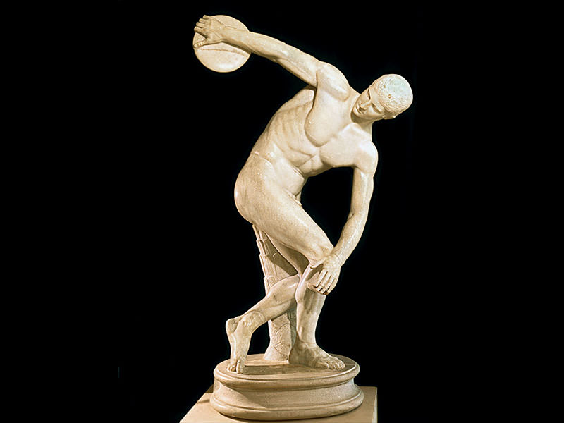
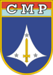
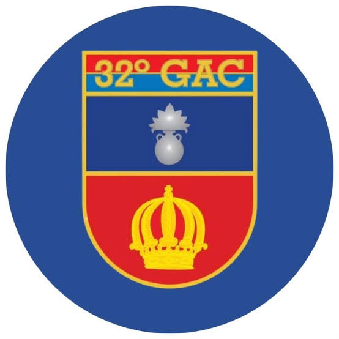
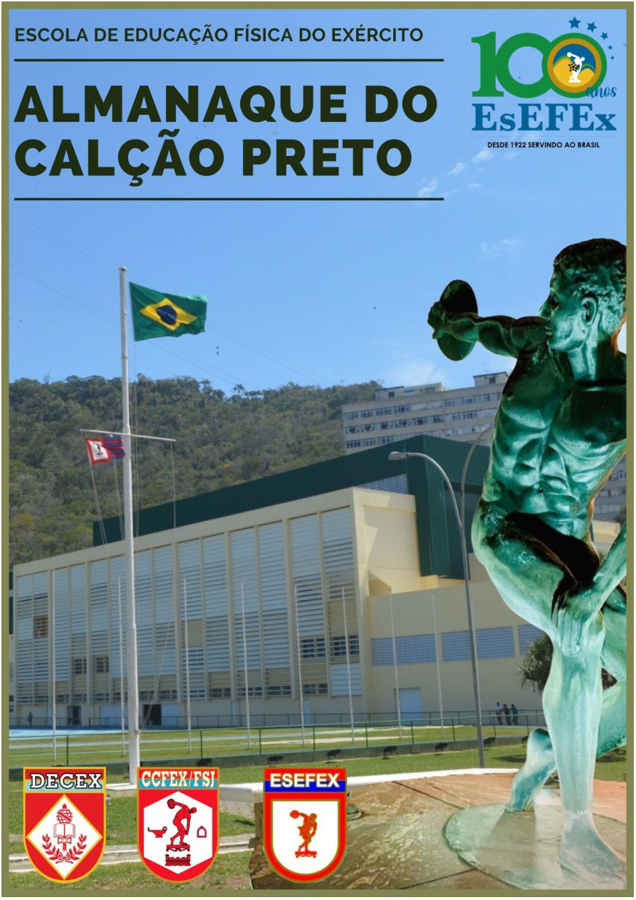

Atividades esportivas
Esporte e integração para começar o encontro.
GUARNIÇÃO DE BRASÍLIA · 2026
O esporte nos reúne.
A amizade nos faz voltar.

GUARNIÇÃO DE BRASÍLIA · 2026

Uma história compartilhada.
Um novo encontro.
01 / O ENCONTRO
Atividades esportivas e confraternização fazem parte da tradição do encontro. Confira os horários das atividades esportivas e do almoço do encontro de 2026.
Esporte e integração para começar o encontro.
Um momento para conversar e reencontrar amigos.
A amizade continua à mesa.
Programação preliminar · Uniforme e orientações serão divulgados com os detalhes do evento.
EDIÇÃO 2026
Faça sua inscrição pelo Google Forms.
Adesão: R$ 100,00.
02 / PARA LEVAR COM VOCÊ
Conheça os materiais do Kit Calção Preto: camiseta, boné, bolsa, copo, caneta e chaveiro.
Clique nas fotos para ampliar.

03 / NOSSA HISTÓRIA
Consulte a versão atual do Almanaque do Calção Preto. O documento está disponível para leitura diretamente aqui no site.
Abrir almanaque atualVersão 18 · PDF · Abre em uma nova aba.
04 / ONDE NOS ENCONTRAR
O encontro será realizado no 32º Grupo de Artilharia de Campanha – Grupo Dom Pedro I.
Grupo Dom Pedro I
Avenida Duque de Caxias, S/N